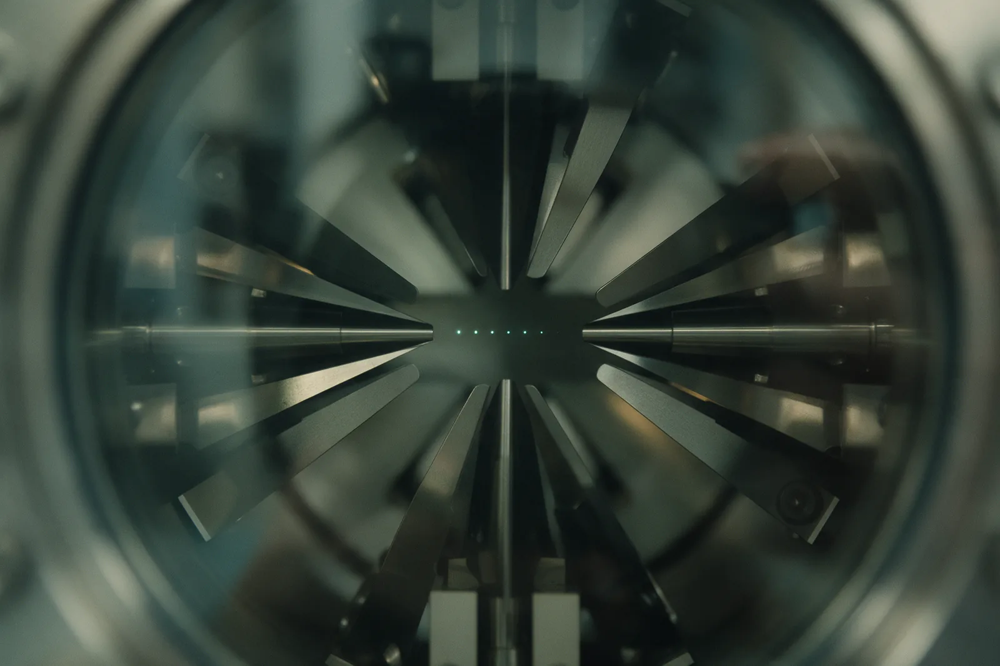
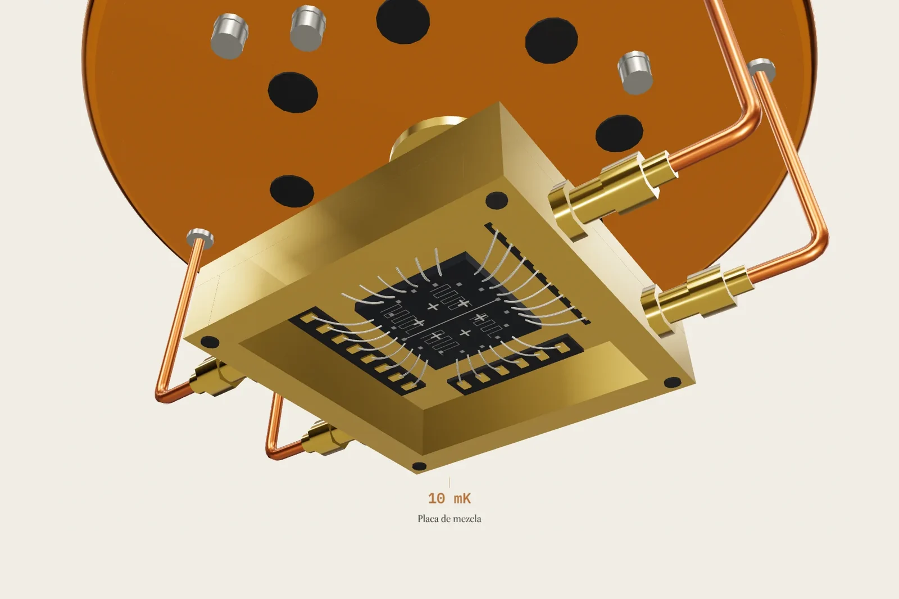
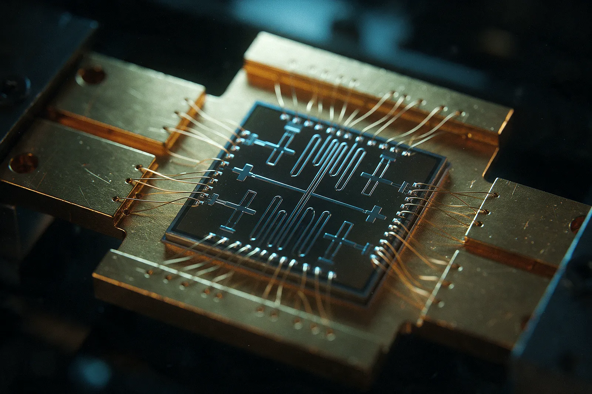
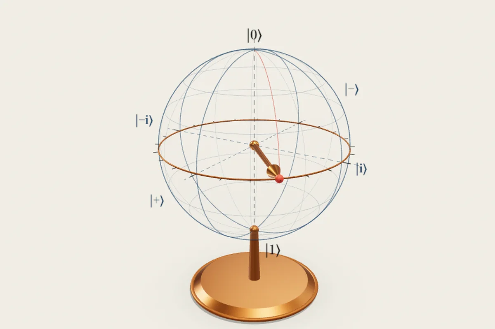
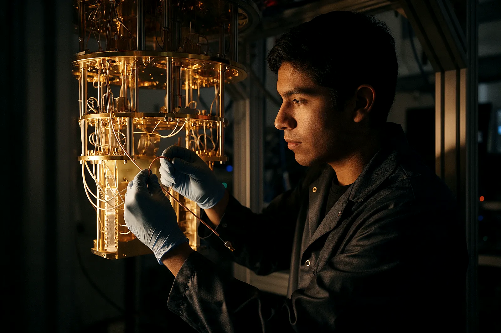

Capítulo I
Fundamentos
Qué es un cúbit de verdad, por qué la fase importa más que la superposición y qué significa medir. Con la doble rendija funcionando en la propia página.
Todo es verdad hasta que lo miras
Fig. 0 — Refrigerador de dilución La cámara baja por las etapas térmicas de la máquina hasta el chip, a diez milikelvin: más frío que el espacio vacío entre las galaxias. Recreación generada con IA a partir de fotografías de criostatos reales.
Saltar la secuenciaNúmero 01 · Septiembre de 2026
Dentro de ese cilindro dorado no hay una computadora más rápida. Hay una manera distinta de calcular, y una carrera contra el reloj: el estado cuántico que hace el trabajo se destruye en cuanto el entorno lo toca.
La computación cuántica arrastra un problema de traducción. Se repite que un cúbit «es 0 y 1 a la vez» y que por eso «prueba todas las respuestas en paralelo». Las dos frases son falsas, y explicarlas bien no es más difícil: es solo menos espectacular. Un cúbit es un sistema de dos estados cuyo estado se describe con dos números complejos, llamados amplitudes. Al medirlo se obtiene un único bit, con una probabilidad que sale del cuadrado de esas amplitudes.
Lo que sí es extraordinario está en otro sitio. Las amplitudes pueden ser negativas o complejas, y por tanto pueden cancelarse. Un algoritmo cuántico bien diseñado no revisa todas las respuestas: organiza los caminos del cálculo para que los que llevan a las respuestas equivocadas se anulen entre sí y los que llevan a la correcta se refuercen. Esa coreografía se llama interferencia, y es la única fuente real de ventaja.
Para que la interferencia ocurra, el sistema tiene que mantenerse coherente: aislado del ruido térmico, de los campos magnéticos, de cualquier interacción que lo delate. De ahí el refrigerador de la portada. Toda la ingeniería de una máquina cuántica es, en el fondo, ingeniería contra el reloj.

Tres cifras para situarse
Temperatura de trabajo de un procesador superconductor. El espacio interestelar está unas doscientas setenta veces más caliente.
Año del Nobel de Física a Aspect, Clauser y Zeilinger por demostrar experimentalmente que el entrelazamiento no se explica con variables ocultas locales.
Estándares de criptografía poscuántica publicados por el NIST en agosto de 2024. La migración empezó antes de que exista la máquina que obliga a hacerla.
En este número

Capítulo I
Qué es un cúbit de verdad, por qué la fase importa más que la superposición y qué significa medir. Con la doble rendija funcionando en la propia página.

Capítulo II
Superconductores, iones atrapados, átomos neutros y fotones. Qué hace cada etapa del refrigerador y por qué hay que bajar hasta los milikelvin.

Capítulo III
Un simulador cuántico escrito desde cero. Aplique puertas, vea girar el vector en la esfera de Bloch, mida y compruebe cómo la coherencia se gasta.

Capítulo IV
Qué se ha demostrado, qué es proyección comercial y qué hay que hacer ya con la criptografía. Incluye lo que no ha funcionado.

Capítulo V
Quiénes escriben, cómo se diseñó el sitio, qué técnica se usó y de dónde sale cada dato. Con la bibliografía completa.

Capítulo VI
Correcciones, dudas y propuestas. El formulario guarda cada mensaje en un archivo de datos.
El antagonista
Ningún cúbit está solo. El entorno lo mide sin querer, todo el rato: un fotón térmico, una vibración, un campo magnético que pasaba por ahí. Esa vigilancia involuntaria se llama decoherencia y destruye exactamente lo que hace útil al sistema, que es la fase relativa entre sus amplitudes.
En ingeniería se resume en dos números. T1 mide cuánto tarda un cúbit excitado en caer a su estado de reposo. T2 mide cuánto tarda en perder la fase, y nunca puede superar el doble de T1. En los procesadores superconductores de 2026 esos tiempos se cuentan en centenares de microsegundos: todo el cálculo tiene que caber dentro de esa ventana.
Por eso cada capítulo de esta revista termina con una nota roja. No para asustar: para que quede claro dónde está hoy la frontera real de esta tecnología.